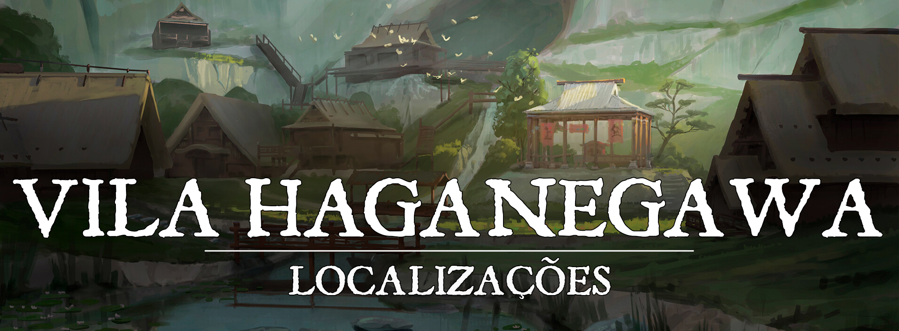

Vila Haganegawa
“Deixe-se ser forjado, abrace a brasa ardente da fornalha, aceite a martelada do ferreiro lhe moldando. Apenas os que já passaram pela forja conhecem sua verdadeira recompensa.”
Descrição
A Vila Haganegawa foi construída nos pés do Monte Kyasuto que se encontra ao sul de Inazuma. Inicialmente, a vila era apenas um lugar de retiro para os ferreiros do clã do Tigre, os quais se exilavam no monte para receber as bênçãos do Kami Byakko antes de levantarem seus martelos e acenderem as fornalhas. Mas com o tempo, um pequeno assentamento foi se formando aos pés do monte, e pouco a pouco a vila de ferreiros foi sendo forjada.
Hoje, a Vila Haganegawa é uma grande referência em Turgon quando o assunto é forja, principalmente sobre a forja de Katanas. As armas forjadas pelos ferreiros da vila são tidas como obras primas, e não existe um espadachim em Turgon que não gostaria de empunhar uma arma de um dos ferreiros da vila.
Descrição Visual:
Forjada aos pés do Monte Kyasuto, a Vila Haganegawa é pequena em tamanho e bem humilde, e dificilmente é vista como um lugar a ser visitado por pessoas comuns. Entrando na vila, sempre é possível ouvir os barulhos de metal sendo martelados entre as bigornas, seja pelos mestres artesãos que criam suas obras primas ou pelos inúmeros aprendizes que dedicam seu sangue a aprimorarem a arte da forja. O chão da vila é bem acinzentado por conta da fuligem e do pó de ferro que vem se misturando com a terra desde os tempos antigos.
Sociedade
População:
A população da vila Haganegawa é formada principalmente por humanos, shifters e tabaxis, porém, é comum encontrar alguns poucos anões na vila. Em um número muito menor, é possível encontrar elfos e descendentes de youkais que moram nas redondezas.
Cultura:
A cultura da forja está encravada na alma de cada um dos moradores da vila, muito por conta do propósito inicial do assentamento que um dia se tornou a vila Haganegawa era ser um ponto de repouso para os artesãos que desciam de seu exílio no Monte Kyasuto. Comumente, quando um jovem turgonita aspira se tornar um ferreiro e chega em sua juventude, o mesmo é enviado para ser adotado como discípulo por um mestre ferreiro da vila que o ensinará rigorosamente o caminho da forja.
Caráter:
O povo da vila é rigoroso e disciplinado, atitude essa que se dá principalmente pelo fato da vila ser formada majoritariamente por ferreiros. Mesmo que não seja um ponto turístico a ser visitado, a população da vila não costuma destratar nenhum viajante, pelo menos não sem um bom motivo. Os mestres ferreiros da vila costumam escolher a dedo aqueles que podem empunhar suas melhores espadas, nunca oferecendo seus trabalhos para qualquer um.
Datas e Festividades:
Além dos festivais de cada uma das estações (citados nas outras cidades grandes de Turgon), os mestres ferreiros da vila Haganegawa tem o costume de subirem ao topo do Monte Kyasuto uma vez por ano no meio do outono para pedir que os Kamis abençoem as suas obras, o exílio no monte costuma durar algo próximo de uma semana, e ao descerem, logo eles retornam para suas forjas e continuam com o seu trabalho.
Religião:
Assim como todas as cidades de Turgon, o povo da Vila Haganegawa adora a Inari, a deusa raposa da prosperidade, dos andarilhos e dos espíritos da natureza. O povo é muito religioso, mas sua cultura não exalta a adoração como outros povos. É comum na Vila Haganegawa que as pessoas de vez em quando visitem o templo que existe na subida do monte para entregar aos Kamis suas oferendas.
Economia
O grande pilar da economia de Vila Haganegawa são os produtos de suas forjas. Todo tipo de artesanato metálico pode ser encontrado na vila, desde utensílios de cozinha e ferramentas de fazenda às conhecidas katanas capazes de cortar os materiais mais duros. É muito comum encontrar diversas caravanas mercantes que passam pela vila, tanto para vender alimentos e provisões quanto para comprar ferramentas forjadas e revender em outros pontos de Turgon.
Serviços:
Os ferreiros da vila oferecem diversos serviços de forja para aqueles que estão interessados em ferramentas metálicas, recebendo bastante encomendas sob demanda de nobres e de espadachins interessados, porém, as melhores obras primas dos ferreiros da vila não são oferecidas a qualquer um, para se obter uma dessas espadas é necessário que o próprio ferreiro lhe reconheça como digno de empunhar sua espada, variando de ferreiro para ferreiro a forma de ganhar essa confiança.
Governo
A vila é governada por Yoshindo Yoshihara, um velho ferreiro que é considerado o mestre entre os mestres ferreiros da vila. Sendo uma vila razoavelmente pequena, a lei não é muito estrita, porém, quando se vê necessário, os guardas da vila empunham suas katanas e protegem aqueles que vivem na vila. Quando algum crime é cometido, dependendo da sua gravidade, o mesmo é julgado pelo próprio Yoshihara, que é bem rigoroso com aqueles que perturbam o ambiente disciplinado das forjas.
Poderio Militar:
A vila é protegida por espadachins dos Guerreiros de Baekho que se dedicam a manter o ambiente em ordem para que os ferreiros possam focar em seus trabalhos.
Conflito
Focada na arte da forja, a Vila Haganegawa sempre evitou conflitos o máximo possível, porém, existem muitos que invejam a obra das mãos dos ferreiros da vila, o que já ocasionou em diversas tentativas de furtos. Muitas foram repelidas com sucesso, mas outras acabaram sendo bem sucedidas. O caso mais conhecido de um dos furtos é sobre a Katana Tentetsutou que foi forjada diretamente por Yoshindo, katana que é considerada por ele seu Magnum Opus, até hoje não se sabe exatamente quem foi o responsável pelo roubo da katana, mas há uma grande preocupação com o desaparecimento da mesma por conta das capacidades da lâmina. A katana Tentetsutou foi forjada utilizando um mineral misterioso que caiu dos céus em um meteorito no fim das invasões abissais, é dito que a espada era capaz de armazenar energia solar e transformá-la em puro poder.
Organizações Relevantes
Os Mestres Ferreiros: No geral, todos os ferreiros da Vila Haganegawa se respeitam, porém, aqueles que se destacam entre si são conhecidos como os Mestres Ferreiros. Eles não são exatamente uma "organização", porém, quando algo importante acontece na vila, Yoshihara sempre busca apoio entre eles, seja para tomar decisões ou apenas para entrar em discussões sem fim sobre técnicas de forja. Seus “membros” mais notáveis são: Yoshindo Yoshihara, Masashiro Okazaki, Oda Tetsuzaki, Makoto Uehara e Shinto Uzaki.
Locais Relevantes
Monte Kyasuto: O Monte Kyasuto é um monte onde os ferreiros de Turgon se exilavam antes de trabalhar em suas obras desde as eras mais antigas. Acredita-se que o exílio no monte é capaz de conectar o ferreiro à sabedoria dos Kamis.
A subida até o seu pico é um caminho longo e trabalhoso, que requer muita dedicação e paciência daqueles que buscam escalá-lo. Na base do monte existe um pequeno templo dedicado a Byakko e a Inari.
NPCs Relevantes
Yoshindo Yoshihara: Yoshindo é o mestre ferreiro mais respeitado de toda Vila Haganegawa, e muito por conta desse respeito, o mesmo foi escolhido como representante da vila. Ele é um homem fechado, pouco fala, mas carrega em si uma grande força de vontade apesar de sua idade avançada.
Yoshindo também foi o forjador da Katana Tentetsutou, que é considerada uma das armas mais mortais já criadas pelo homem. A katana foi forjada a partir de um meteorito que continha um mineral misterioso capaz de absorver a energia presente na luz solar. A Katana foi roubada e até os dias de hoje não se sabe do paradeiro da mesma.
Masashiro Okazaki: Masashiro é descendente de Masamune Okazaki, o lendário dragão que forjou a espada Masamune para selar o poder da “espada maldita” forjada por seu irmão, a espada Muramasa. Por conta de sua ancestralidade, ele possui algumas características dracônicas que cobrem partes de seu corpo. Masashiro tem o sonho de criar uma katana capaz de ultrapassar as lâminas criadas por seus antepassados dragões.
Hoje as katanas de seus antepassados estão nas mãos de um Ronin poderoso que é quase uma lenda em turgon, dizem que o portador das lâminas é um ser aterrorizante que é capaz de fazer até mesmo os mais fortes temerem sua presença.
Oda Tetsuzaki: Oda é um jovem que é conhecido como o Prodígio dos Tetsuzaki, por conta de sua elevada habilidade de forja apesar de sua pouca idade em comparação com os outros Mestres Ferreiros. A casa Tetsuzaki carrega de geração em geração o conhecimento da forja das “Lâminas Serrilhadas”, um tipo especial de Katana que possui “dentes” em suas lâminas, porém, por muito tempo as lâminas dos Tetsuzakis não eram consideradas boas espadas por conta de sua baixa durabilidade e da facilidade que os dentes das espadas tinham de quebrar.
Porém, Oda revolucionou a arte de sua casa das Lâminas Serrilhadas criando espadas mortais e quase indestrutíveis, por conta de tal feito o mesmo foi reconhecido como um dos Mestres Ferreiros de Haganegawa.
Makoto Uehara: Makoto é o patriarca da casa Uehara que é conhecida por sua forja das Lâminas de Alma, espadas incapazes de cortar a carne, porém capazes de afetar o espírito. Essas lâminas são muito utilizadas por alguns exorcistas para purificar lugares amaldiçoados e lidar com youkais malignos.
Makoto é o mais sereno dos Mestres Ferreiros de Haganegawa, carregando com ele uma calmaria contagiante.
Shinto Uzaki: Shinto é o ferreiro conhecido por forjar as armas mais letais que já foram criadas em Haganegawa, suas criações são em sua maioria lâminas pequenas como Tantōs, especializadas em assassinatos.
Shinto é um homem reservado e sozinho que nunca aceitou discípulos, e nunca disse o porquê. Acredita-se que sua arte de forja logo será perdida, já que o mesmo não compartilhou com ninguém seus métodos e por conta de sua idade já está avançada.
Origem
A Vila Haganegawa surgiu por conta dos ferreiros que subiam o Monte Kyasuto e montavam suas barracas no pé do monte. Inicialmente era apenas um assentamento, mas conforme o tempo foi passando, os artesãos começaram a montar cabanas que viraram casas e a vila foi tomando sua forma.